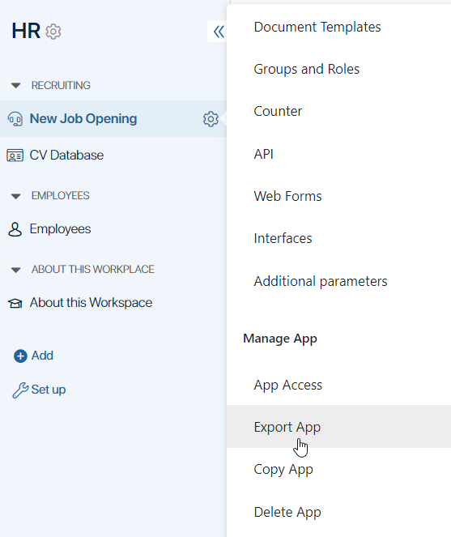
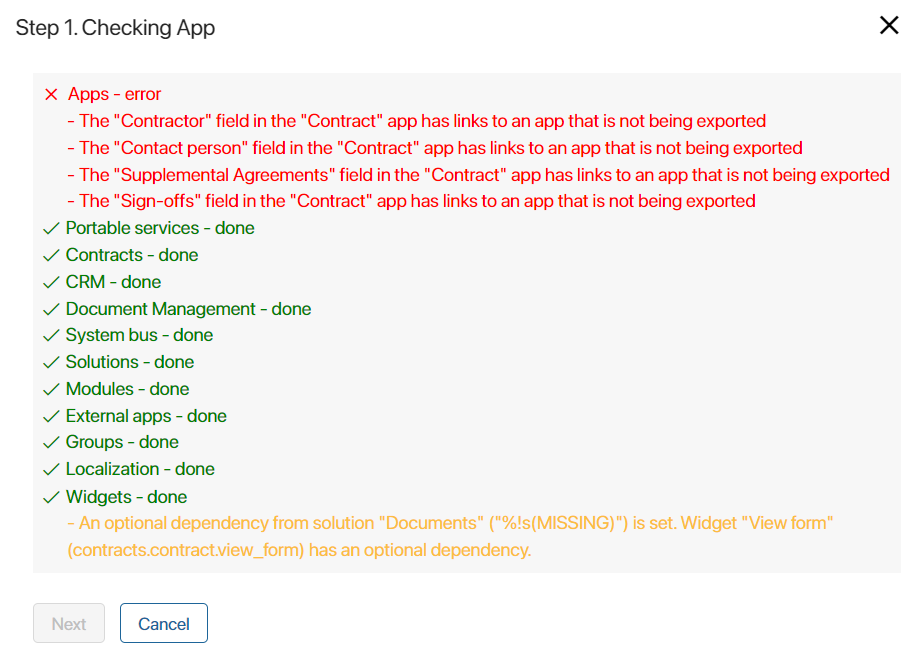
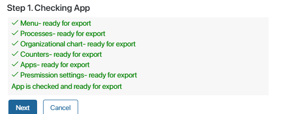
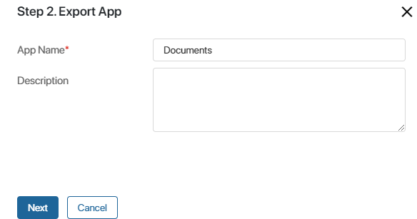

You can export an app to move it from one company to another.
Please note that:
- You can export a system app only as part of a workspace or solution. For more information, see the Export a built-in app section of this article.
- If a custom app has links to global system objects, namely other apps, workspaces, or business processes, an error will occur when exporting it.
- Using
GlobalorNamespaceconstants in scripts restricts the export of system components. Read more about it in the Global constants in scripts article.
When you export an app, all of the following items are exported:
- Business processes.
- Configured statuses and filters, including filtering in the Add filter option.
- Counters.
- Groups and roles.
- Forms and context variables used in business processes.
- Button settings.
- Global settings for app item view.
- Access permissions to the app and its data set up for system groups and roles.
- Document templates created in an app.
- Document categorization scheme if registration is enabled in the app.
- Signature settings.
- Archiving settings for approval sheets and lists of informed users.
All of these elements will be imported with the app to the other company.
Export an app
To start exporting an app, click next to its name and select Export App.
начало внимание
Only the users included in the Administrators group can export apps.
конец внимание

In the window that opens, click Start Export.
Step 1: App checking
At the first export step, the app is checked for links to global system objects.
If such links are detected, a corresponding notification is displayed. You will not be able to export the workspace until the links are removed manually. If you need to keep the links to other system components, it is recommended to export the app as part of a workspace or solution.
You will also see a warning if the app scripts have optional dependencies from other workspaces or modules. Such dependencies do not prevent export, but the correct operation of the scripts is not guaranteed when the app is imported later.
You will also see a warning if:
- There are optional dependencies from other workspaces or modules in scripts within the app.
- There are mismatched variables in document templates.
Such dependencies do not prevent export, but the correct operation of the scripts and document templates is not guaranteed when the app is imported later.

If there are no links to global system objects, the following notification is displayed:

To continue export, click Next.
Step 2: Export the app
Enter the app’s name and description.

- Name*. Specify the name of the app.
- Description. Describe the features and specifics of the app.
Click Next to continue export.
The app will be exported to a file. To save the file to your PC, click on the link in the provided window.
Later you will be able to import the file to another company.
Export a built-in app
BRIX includes default built-in apps located in built-in workspaces that are ready for use. Exporting a built-in app is possible as part of a built-in workspace or a solution.
Export peculiarities:
- If other apps and workspaces are associated with a built-in app, they can be exported. Let’s say you want to export the Contracts workspace, which has a contract approval business process that is associated with the Companies built-in app. During export and subsequent import of the workspace, there are no errors, since every company in BRIX has an identical built-in app. However, if a custom app not associated with the Contracts workspace is incorporated into the process, an error will occur during export.
- If you export a built-in app together with a built-in workspace as part of a solution, all the structures (processes and widgets) associated with the app will also be exported.
начало внимание
Using Global or Namespace constants in scripts restricts the export of system components. Read more about it in the Global constants in scripts article.
конец внимание
Found a typo? Select it and press Ctrl+Enter to send us feedback